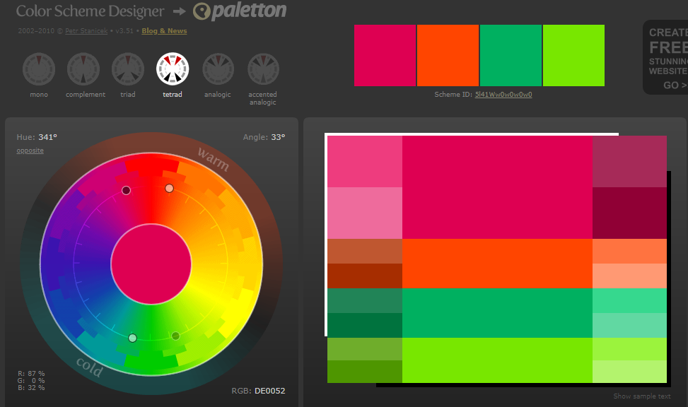

En la página principal toda la Fuente que he utilizado es: "font-family: Arial, Helvetica, sans-serif;". No he puesto otras fuentes en la misma página para no crear una sensación de incongruencia. De esta manera creo que todo es más armónico. La Tipografía que hay en el apartado 'Comentarios' de los enlaces de las asignaturas, es una fuente creada por mi, llamada Calligraphr. Tanto el header como el footer tienen la misma Fuente: "font-family: Arial, Helvetica, sans-serif;". Por último, la tipografía de ésta página es: "font-family: "Times New Roman", Times, serif;"
Para el favicono he escogido una imagen del logo del centro IES tetuán de las victorias y lo he convertido a icono con la etiqueta (link rel='icon'), para el logo de la página he escogido un gif también del centro. En el footer también he añadido dos botones, uno que simboliza una i de información, que te redirecciona precisamente a esta página, y el otro es un icono de instagram que te redirecciona a dicha red social.
Para el fondo de la página web he elegido un color muy claro con objetivo de distinguir bien todos los elementos que contiene la web. Para el footer he elegido un color oscuro, que haga contraste con el cuerpo de la página. Los colores de las letras son blancos o negros, dependiendo del color de fondo, para que se distingan bien. Para la tabla he usado una gama de colores de Paletton. A continuación, adjunto una imagen. En ella se ven hasta 3 gamas de colores complementarios:
